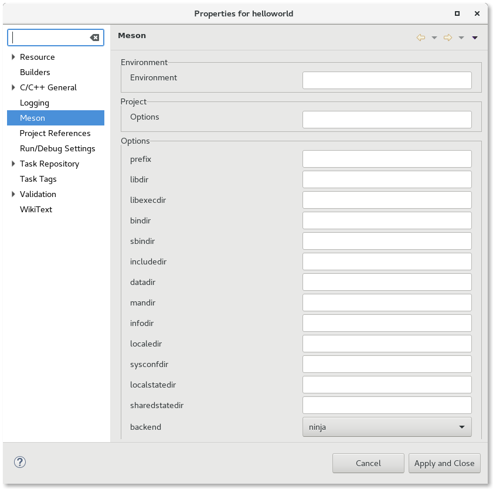
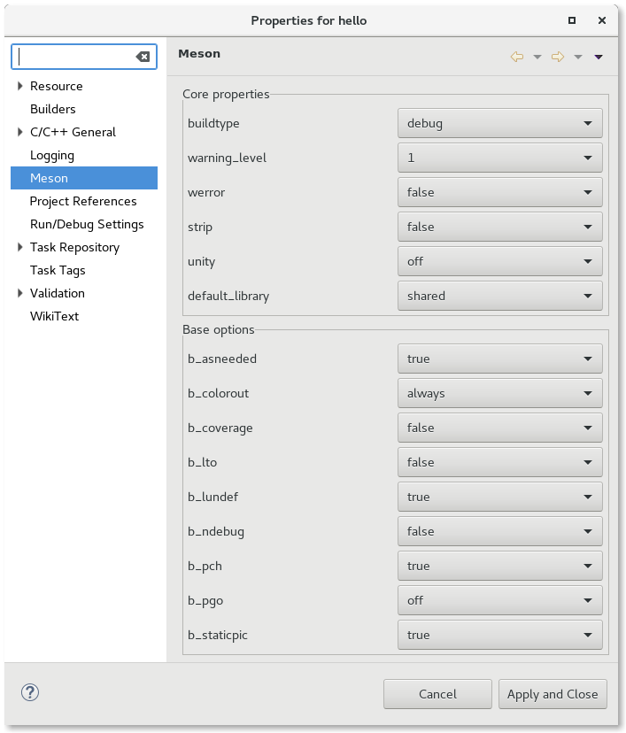

| Configuration | ||
|---|---|---|
|
|
|
|
| Creating a Meson Project | Building | |
To specify configuration options, go to Project -> Properties -> Meson
The meson command without arguments can only be run for a build directory once. After it has been run once, a user may use the meson configure command to change some parameters of the configuration. Thus, there are two UI pages presented to the user:
Before the first configuration, the Meson plug-ins use the output of the meson -h command and parses the output to create the UI page.

Parameters that have a set of values are presented as a combo, boolean options are presented as a checkbox, and string options are presented as text boxes. In addition, the user may specify Project specific options and Environment variables. Project specified options are created in a special file called meson_options.txt and are set like a compiler flag (-Dname[=value]). The project specified options are not parsed by the Meson plug-ins so the user must know what is possible ahead of configuration. Environment variables are specified as NAME=VALUE pairs and are used during the meson command (e.g. CC=/my/dir/gcc).
By default, the meson buildtype parameter is set based on the active configuration launch type (run = release, debug = debug). The user can override this prior to configuration and change the build type as needed (e.g. debugoptimized or plain). Likewise, the user can simply change the launch type using the Launch bar.
After configuration, the Meson plug-in uses the output of meson configure to get the set of options that can be changed and parses them to create the UI page. Project options are returned as part of the output and are parsed like any other option (presented either as a combo, checkbox, or text entry).

Hitting the Apply or Apply and Close buttons will end up running the meson configure command immediately with any options that have been changed in the dialog.
|
|

|
|
| Creating a Meson Project | Building |